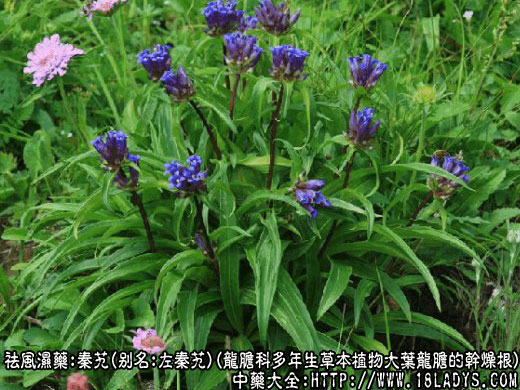
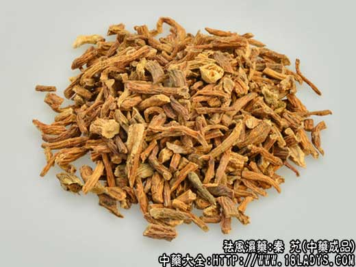
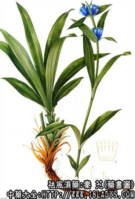

秦艽为常用中药，《神农本草经》列为中品。现商品分为西秦艽和山秦艽二类。
1、西秦艽
别名：大艽，左秦艽，麻花艽，西藏龙胆。
来源：为龙胆科多年生草本植物大叶龙胆的干燥根。
产地：主产于甘肃、陕西、四川、云南。西藏、青海、山西、内蒙、东北等地亦有分布，均为野生。
性状鉴别：（1）萝卜艽型：主根粗大，略呈圆锥形或圆柱形，长约10～28厘米，直径1.5～4厘米。单一而很少分歧。表面灰黄色至棕黄色。质坚实而不扭曲或微扭曲。横断面皮部黄棕色，木质部土黄色。气味特殊，味甚苦而带涩，质量最好。属于这类型的还有鸡腿秦艽（甘肃），牛尾秦艽（四川），大秦艽（山西、内蒙、东北），藏秦艽（根外皮黑色，内部中心白色）等。
（2）麻花艽型：（麻花艽、辫子艽），根粗大，但常数个交错缠绕成辫子状或麻花状。长约达20厘米，直径3～6厘米。体轻而疏松，内常有腐朽的空心。质较次。
以根粗长，独根，色棕黄皮细肉厚，形如萝卜或鸡腿者为佳。
2、山秦艽
别名：小秦艽、狍尾艽。
来源：为龙胆科多年生草本植物达乌鸦里龙胆的干燥根。
产地：主产于山西、河北、内蒙。陕、甘、宁、青、西藏等地亦有分布。均为野生。
性状鉴别：主根细长，体形较上二型为小。长约8～18厘米，直径3～9毫米。未去皮者表面棕黑色或黄棕色，已去皮者表面淡黄色。根头部多为一个或数个合生，分歧多而纤细，残存的茎基留有纤维状的残叶维管束。表面有纵向沟纹，有时呈扭曲状。体轻而松脆，味苦涩。（京津称之为山大艽）
以条粗、质实、涩黄、不带黑皮者为佳。
主要成分：含三种生物硷，即秦艽碱甲、秦艽碱乙、秦艽碱丙。
药理作用：1、抗炎：能抑制实验性关节炎，有效成分为秦艽甲素。抗炎原理是通过神经系统间接刺激垂体，使促皮质素分泌增加，肾上腺皮质功能亢进，从而有助于消炎消肿。
2、解热：前人说秦艽能治潮热，现代实验证明，秦艽确有解热作用。
3、镇痛和镇静。动物实验证明，本品有一定镇痛和镇静作用。
4、抗过敏：有一定抗组织胺和抗过敏性休克的作用。
5、升血糖：有效成分为秦艽甲素，可能是通过释放肾上腺素而起作用。
6、降压：其水浸液等有降低麻醉动物血压的作用。
7、抗菌：对痢疾杆菌、伤寒杆菌、金黄色葡萄菌等有抑菌作用。
炮制：切片，生用。
性味：辛、苦、平。
归经：入胃、大肠、肝、胆经。
功能：散风除湿、通络舒筋、去湿热。
临床应用：1、用于治疗痹症：前人认为本品是“三痹必用之药”，现代广泛用于治疗风湿性和类风湿性关节炎，常配桑枝、威灵仙；如为行痹，痛无定处，则配防风、羌活，方如防风汤。
2、用于治疗中风后半身不遂（脑血管意外后遗的偏瘫），尤其有上肢拘挛者。如表现有血虚，可配当归、白芍、首乌等养血药，方如秦艽当归汤。
3、用于治疗阴虚内热，骨蒸潮热。用秦艽配其它滋阴药（如鳖甲、当归）和清热药（知母、柴胡）等，有助于解退虚热，方如秦艽鳖甲散。
4、用于治疗湿热黄疸，尤其小儿急性黄疸型传染肝炎，配黄芩、苍术等，治疗效果较好。
用量：3～12g，大剂15～18g。
处方举例：1、防风汤：防风9g、秦艽9g、羌活9g、桂枝6g、当归9g、茯苓12g、杏仁9g、桑枝15g、丝瓜络6g，水煎服。
2、秦艽当归汤：秦艽9g、当归9g、白芍9g、首乌12g、白蒺藜6g、钩藤9g、桑枝15g、丝瓜络3g，水煎服。
3、秦艽鳖甲散（《卫生宝鉴》）：秦艽15g、鳖甲30g、知母15g、当归15g、柴胡30g、地骨皮30g，共研粗末，每服15g，入乌梅一个，青蒿叶6g，同煎服。
注：秦艽的原植物较多，分布地区亦广，历代本草记载和描绘的植物形态方面，均存在有混乱现象。在商品外形上，以品种和产区的不同，也有较大差异。按其形状，分为萝卜艽、鸡腿艽、麻花艽、小秦艽、狍尾艽等，但均为龙胆属秦艽组植物，同等药用。故根据进销习惯归纳为二类、三个类型。
此外，秦艽的原植物在青海还有管花龙胆，新疆有天山龙胆，瓦氏龙胆，狭翘龙胆等分布，在商品上均属于小秦艽类型。